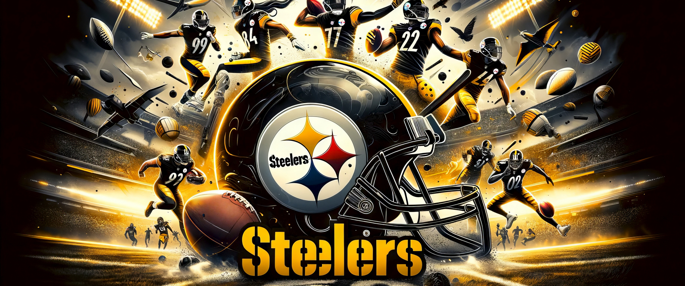

<!DOCTYPE html>
<html lang="en">
<head>
    <meta charset="UTF-8">
    <meta name="viewport" content="width=device-width, initial-scale=1.0">
    <title>Pittsburgh Steelers - Home</title>
    <style>
        .centered {
            text-align: center;
            margin: 0 auto;
            width: 50%;
        }
    </style>
    <style>
        .centered {
            display: block;
            margin-left: auto;
            margin-right: auto;
        }
        <style>
            body {
                background-color: rgb(172, 161, 11);
            }

            
            img {
                display: block;
                margin: 20px auto;
                width: 600px;
            }
    <link rel="stylesheet" href="https://www.profootballhof.com/teams/pittsburgh-steelers/team-history/">
</head>
<body>
    <div id="container">
    <header>
        <h1>Pittsburgh Steelers</h1>
        
        <nav>
            <ul>
                <li><a href="index.html">Home</a></li>
                <li><a href="history.html">History</a></li>
            </ul>
        </nav>
    </header>
    <main>
        <h2>Welcome to the Pittsburgh Steelers Fan Page</h2>
        <h3>About the Team</h3>
        <p class="centered">The Pittsburgh Steelers are a professional American football team based in Pittsburgh. They are a member of the North Division of the American Football Conference (AFC) in the National Football League (NFL). The Steelers are one of the most successful franchises in NFL history, having won six Super Bowl titles which istied for the most in NFL history. The team is currently led by head coach Mike Tomlin, who has been with the Steelers since 2007. This season, the Steelers have shown promise with a mix of veteran leadership and young talent.</p>
        <h3>Recent Achievements</h3>
        <p class="centered">In recent years, the Steelers have continued to be competitive in the NFL, consistently making playoff appearances and contending for division titles. The team is known for its strong defense and dynamic offense, led by key players who have become fan favorites.Quarterback Russell Wilson has been a standout, helping the team secure a 37-15 win over the Jets recently. The defense, anchored by stars like T.J. Watt, continues to be a formidable force. The Steelers play their home games at Heinz Field, a venue known for its energetic atmosphere. Fans are eagerly anticipating the upcoming matchups, hoping the team can make a deep playoff run.</p>
        
       
        <ul class="centered-list">
            <li>Super Bowl Wins: 6</li>
            <li>Conference Championships: 8</li>
            <li>Division Championships: 24</li>
            <li>Playoff Appearances: 33</li>
        </ul>
        
        <hr>
        <a href="https://www.steelers.com">Official Steelers Website</a>
        <a href="https://www.nfl.com/teams/pittsburgh-steelers/">NFL Steelers Page</a>
        <hr>
    </main>
    <footer>
        <p>&copy; 2024 Pittsburgh Steelers Fan Page</p>
    </footer>
    </div>
</body>
</html>

<!DOCTYPE html>
<html lang="en">
<head>
    <meta charset="UTF-8">
    <meta name="viewport" content="width=device-width, initial-scale=1.0">
    <title>Pittsburgh Steelers - History</title>
    <link rel="stylesheet" href="styles.css">
</head>
<body>
    <header>
        <h1>Pittsburgh Steelers</h1>
        <nav>
            <ul>
                <li><a href="index.html">Home</a></li>
                <li><a href="history.html">History</a></li>
            </ul>
        </nav>
    </header>
    <main>
        <h2>History of the Pittsburgh Steelers</h2>
        <h3>Early Years</h3>
        <p>The Pittsburgh Steelers were founded in 1933 by Art Rooney. Originally known as the Pittsburgh Pirates, the team struggled in its early years, failing to make a significant impact in the league. However, the team’s fortunes began to change in the 1970s.</p>
        <h3>Golden Era</h3>
        <p>During the 1970s, the Steelers became a dominant force in the NFL, winning four Super Bowl titles in six years. This era was marked by the leadership of head coach Chuck Noll and the emergence of legendary players such as Terry Bradshaw, Franco Harris, and the Steel Curtain defense.</p>
        <ul>
            <li>Founded: 1933</li>
            <li>Original Name: Pittsburgh Pirates</li>
            <li>First Super Bowl Win: 1974</li>
            <li>Hall of Fame Players: 32</li>
        </ul>
        <hr>
        <a href="https://en.wikipedia.org/wiki/Pittsburgh_Steelers">Steelers Wikipedia Page</a>
        <a href="https://www.profootballhof.com/teams/pittsburgh-steelers/">Pro Football Hall of Fame - Steelers</a>
        <hr>
        
        
    </main>
    <footer>
        <p>&copy; 2024 Pittsburgh Steelers Fan Page</p>
    </footer>
</body>
</html>